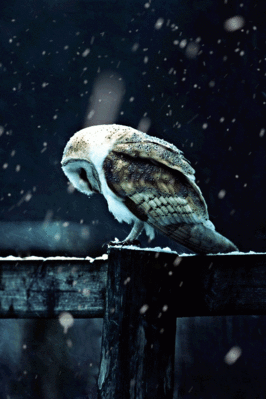

The Perch
The Perch
Owl of the Week

The Owl of the is .....
The Barn Owl
- The barn owl was voted Britain’s favourite farmland bird by the public in an RSPB poll in July 2007.
- Historically, the barn owl was Britain’s most common owl species, but today only one farm in about 75 can boast a barn owl nest.
- Barn owls screech, not hoot (that’s tawny owls). To hear the cry of the barn owl, and other British owls, visit the Barn Owl Trust website.
- The barn owl can fly almost silently. This enables it to hear the slightest sounds made by its rodent prey hidden in deep vegetation while it’s flying up to three metres overhead.
- The barn owl’s heart-shaped face collects sound in the same way as human ears. Its hearing is the most sensitive of any creature tested.
- Barn owls are non-territorial. Adults live in overlapping home ranges, each one covering approximately 5,000 hectares. That’s a staggering 12,500 acres or 7,100 football pitches!
- It’s not uncommon for barn owl chicks in the nest to feed each other. This behaviour is incredibly rare in birds.
- In order to live and breed, a pair of barn owls needs to eat around 5,000 prey items a year. These are mainly field voles, wood mice, and common shrews.
- Though barn owls are capable of producing three broods of five to seven young each year, most breed only once and produce, on average, only two and a half young. 29 per cent of nests produce no young at all.
- 91 per cent of barn owls post-mortemed were found to contain rat poison. Some owls die as a direct result of consuming rodenticides, but most contain sub-lethal doses. The effects of this remain unknown.
- In a typical year, around 3,000 juvenile barn owls are killed on Britain’s motorways, dual carriageways and other trunk roads. That’s about a third of all the young that fledge.
- Everyone can help barn owls. Leave a patch of rough grassland to grow wild thus creating habitat for voles, erect a super-safe deep nest box, volunteer for your local barn owl group, switch to non-toxic rodent control and support charities working to conserve the barn owl.